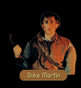

|
|
|  |
|
|
| CHAPTER 5 - FIRST ENCOUNTER |
|
They were not alone. James's pulse quickened as he saw the lone figure approach; but when it became apparent they were not being attacked, he relaxed a bit, squinted slightly in an attempt to see who was about to join them. MARTIN: I knew when I saw Seigneur Locklear prowling about with Baron Gabot you couldn't be far behind. How's my princely bother Arutha? JAMES: Fine, when I last saw him. He's outside of the Dimwood with a small force, waiting for my messengers to reach him. What are you doing so far from Crydee anyway? Briana have you hunting rabbits for the ducal stew? MARTIN: No, but soon we four will be hunting far larger game than that. Seems this small wrinkle developing in the Northlands is about to become a Kingdom problem if what Locklear told me was correct. I'm just glad to have you two here to lend a hand. JAMES: Is King Lyam going to join the party? MARTIN: Doubtful. This engagement isn't serious enough to warrant bringing the King into it and he's got his hands full enough with the Keshian Empire. Seems one of our Kingdom ships accidentally mistook one of her Empress' Imperial frigates as a pirate ship and sunk it with all hands on board. Naturally, Lord Hazra-Khan is having a conniption. We'll have to fight out Northwarden's battle on our own. JAMES: What can Locklear and I do? MARTIN: I have most of Baron Gabot's rangers out checking up on the movements of the enemy, so I'll need you three to give me a hand with various missions. I hope you three are in the mood for a bit of running about...
|
| CROSSBOWS |
JAMES: Prince Arutha has told me on several occasions you're about the finest archer he knows.MARTIN: Arutha also used to tell his sister Carline that his father was going to rope her to the mainmast of Krondor's Glory so the Quegians could have target practice when they passed her in the harbor. Doesn't mean it was true.
JAMES: And I wasn't Jimmy the Hand. You're being modest, Duke.
MARTIN: So I might be handy with a bow, why the interest?
JAMES: I was hoping you could give Locky and I a few pointers. We both could stand to learn a little about how to use the crossbow more effectively.
MARTIN: Well, as the moredhel don't seem to be charging down our throats this very minute, I suppose I might be able to teach you a little bit...
Martin sighted his crossbow and fired.
Feathers drifted from above as the lifeless sparrow crashed through the branches to the ground, a crossbow quarrel neatly driven through it's head. It had been dead even before it touched the ground.
"That's incredible," James said. "At that range I would have thought it impossible."
"No," Martin said, his look somewhat enigmatic as he knelt to touch the bird at his feet. "I've hit them at twice that distance, so it was merely difficult." Handing his crossbow over first to James and then to Locklear, he gave instructions as each attempted similar shots.
"You both have made some progress," Martin said. "Just keep doing what you started doing today and you'll both make fine marksmen."
| BARON GABOT |
[CHAPTER 5]JAMES: So... Baron Gabot told us we were to report to you until the siege begins. Where do you want us?
MARTIN: I was just planning a little fun. Patrus, how's your moredhel?
PATRUS: Which 'un you talkin' about, Duke? The one I gots under my bed or the one what makes me breakfast in the morning?
MARTIN: Amazing. Jimmy, is it just me or does Patrus remind you of a certain Admiral we both know?
JAMES: I think he and Amos Trask would either love each other or hang one another from a gibbet.
I think the Duke meant, how well do you speak moredhel, Patrus?
PATRUS: I knew perfect well what he was a'sayin' you court rat. I can read it, but don't ask me to pronounce any that dog-howlin' yewhaw.
MARTIN: You won't have to for what I have in mind. There are some boxes near here that have moredhel plates on them. I want you to crack the codes on them. I imagine those boxes will have supplies of rations for the moredhel once they begin the siege, but I doubt they'll suspect we've tampered with them. If there are any rations, find a way to poison them, then replace them in the boxes. Come back and find me once you're done.
| CHAPTER 5 - SUBSEQUENT ENCOUNTERS |
|
They were not alone. James's pulse quickened as he saw the lone figure approach; but when it became apparent they were not being attacked, he relaxed a bit, squinted slightly in an attempt to see who was about to join them. MARTIN: Things are not going well at all. I've started to get reports from some of our scouts and from the sound of things, this will not be an easy siege... So, what's brought you looking for me?
|
| POISONING |
[CHAPTER 5]JAMES: We've poisoned the food in all the moredhel lockchests we could find. There weren't many of them out there.
MARTIN: You probably found the majority of them, so I wouldn't worry about it. I have something else I need you to do... There was a minstrel that the Baron employed here at Northwarden by the name of Tamney. When we got word that the moredhel were beginning to move down from Raglam to Northwarden Pass, he picked up all his things and disappeared in the middle of the night. The baron is insistent he brought back.
JAMES: The Baron mentioned this Tamney to us as well, but why is it so imperative he come back? Surely, the men might feel a little betrayed, but if their morale is that shaky...
MARTIN: The Baron sent word a short while ago that a Nighthawk was discovered within the confines of the castle this morning and there is evidence there may be others. Naturally word has spread and the men are edgy about the whole matter. It doesn't help matters Tamney was never administered an oath of loyalty.
JAMES: And it's possible he was connected with the Nighthawks. I understand.
MARTIN: Find him and get him back to Northwarden if you can, but don't let him know you're suspicious. He might bolt... One of Gabot's scouts has told me there may be goblin activity in the north, so hurry back when you're finished. I may need your help.
| GOBLINS |
[CHAPTER 5]JAMES: I'm beginning to get wistful for the days when we were running the billets in Krondor for Master deLacy. I haven't had this much exercise in a long time... So, where are these goblins you told us about?
MARTIN: What about Tamney? Did you find him?
JAMES: Yes, though it took a little extra work to get him heading back to Northwarden. He promised dutifully he would return and I believe he will. We had a long talk...
MARTIN: I can see now why Arutha values you so much. I personally wouldn't have believed it possible. But, as things stand, we still have a long row to hoe, as they say. A goblin company of archers has already moved into the pass and is trying to entrench itself there. If they get a foothold, they may be impossible to root out once the moredhel roll in. We need to find out what their deployment is going to be when the battle begins.
JAMES: Okay, so we grab their leader and give him the hot poker treatment in the dungeon under Northwarden. Tell us where to find him and he's yours.
MARTIN: No good. As soon as they discover he's missing, they'll change their tactics. No, what I need is the big plan and I'll be willing to bet that it's still in Raglam.
JAMES: How many scouts has the Baron lent you?
MARTIN: I have about twenty men out at the moment. Why?
JAMES: Then you won't miss the three of us much. We're going to Raglam and we'll find a way to get that plan for you.
MARTIN: You plan to march through a company of goblin archers to the city where the moredhel are massing, walk right up to leader of the enemy and say, Excuse me, may I just borrow your warplans, please?
JAMES: As I recall, I snuck the future Duke of Crydee, Prince and Princess, and the Admiral of the Western Fleet out of Krondor while it was under siege of Jocko Radburn and Guy du Bas-Tyra. I think I can snatch a silly piece of paper.
JAMES: I think if Prince Arutha didn't want to make you the Duke of Krondor some day, he would probably have you killed as a madman. All right then, get me that paper but be careful. I'll be waiting for you...
| PLANS |
[CHAPTER 5]JAMES: We got the plans for you, Martin. Too bad you didn't come with us though, we had quite a bit of fun.
MARTIN: Won't be much time for that very soon. My gut instinct tells me they'll begin the assault in the next few days. Before we go back to the castle, there's something I would like you three to check out for me. I got this mysterious note from someone that said a company of moredhel illusionists have slipped behind Northwarden. I thought Patrus would know how best to deal with them...
PATRUS: Just like those pointy eared lily munchers to go stealin' my ideas! Baron Gabot had me workin' on somethin' like that but I never could get the kinks out... I knew my tongue was itchin' for some reason... But if we run across them, I got sumthin' that'll fix their hindquarters in a bat's fart!
MARTIN: Whoever wrote the note doesn't specify where they are supposed to be located, so if you three would just take a swing southwest and see what you can find. Once you're done, come back and we'll all head to the castle together.
| NORTHWARDEN |
[CHAPTER 5]JAMES: Scratch one group of moredhel magicians. We found them, Duke...
MARTIN: Good. I want you three to hurry ahead to the castle. They've already turned back an irritation assault today and I think the Baron can use your help right now. I need to find out what has happened to one of our scouts that's gone missing. I'll be along as soon as I can.
| GOODBYE |
|
JAMES:
Well, that at least answers a few questions. We'd best be back at getting this battle in order.
Is there any thing else you need at the moment? MARTIN: Just for you three to be careful. We can't afford to lose any more men. JAMES: I think we can handle that order. You stay out of harm's way as well, Duke. Arutha wouldn't forgive me if you somehow got arrow shot by some goblin archer! Farewell!
|

| CHAPTER 7 - FIRST ENCOUNTER |
|
[CHAPTER 7] They were not alone. James's pulse quickened as he saw the lone figure approach; but when it became apparent they were not being attacked, he relaxed a bit, squinted slightly in an attempt to see who was about to join them. MARTIN: James! Locklear! What are you doing here? JAMES: Prince Arutha told us that a Tsurani magician has given over a rift machine to the moredhel for use in this battle. We've come down here to locate and destroy it before Delekhan can get full use of it. How did you get here? We never saw you at the castle. MARTIN: When a portion of the Southern Arrow company began to fall back from Northwarden, I decided to follow after them and make sure they weren't up to any mischief. As you might have guessed, they had that infernal machine of theirs set up a few miles to the north, but they spotted me and assumed that I was a human mercenary that was slacking behind... JAMES: ...so you played along and went through the gate and ended up here. How did you know you wouldn't end up in Sar-Sargoth? MARTIN: I didn't, but I was surrounded by moredhel. I imagined that my best hope for survival lay on the other side of wherever that door led. Whenever we emerged here, I told the captain that I had to rejoin my unit and I was off. There were a few close moments along the way, but I won free at last. JAMES: Why didn't you try to destroy it? MARTIN: I thought about it, but the device was surrounded by moredhel at the time so I decided I'd try to gather some help. You three are the first humans I've seen in a week.
|
| RIFT MACHINE |
JAMES: Relative to where we are now, where is the rift-machine? Is it nearby?MARTIN: I'm not sure. To escape the moredhel camp, I slipped under a stack of canvas bags in the back of a supply wagon they brought with them. After we had travelled for a few hours, they pulled over for a nature break and I was able to get away. I do recall hearing water as we were moving out, however.
JAMES: So you were near a waterfall or a river... At least that gives us an idea of where we can start our search. Anything else we should know?
MARTIN: From listening to the wagon drivers talk, I get the feeling I wasn't the only unexpected visitor through that machine of theirs. Apparently some rebel moredhel chieftain came through and caused them a good deal of grief, then headed south towards where one of their warlords is staging for the attack on Sethanon. They were none too happy about him being on the loose. I'm hoping I can find him myself so I can ask him a few questions.
JAMES: Any idea who this warlord in the south is?
MARTIN: I believe it's Delekhan's son Moraeulf, though I couldn't be certain of it. They were bandying about names so fast, I was having a little trouble understanding all of it. My moredhel isn't all it used to be.
| SETHANON |
LOCKLEAR: What is it with Sethanon and the moredhel? This is the second time they've attacked there and I never understood why they struck ten years ago. There's nothing in Sethanon but a heap of ruins.JAMES: At least the last time we had an army to get in their way. Even at a forced march, Prince Arutha's men can't get here for another few days and they'll be exhausted once they arrive and...now that I think of it, why is Delekhan bringing an army? If he expected to arrive at Sethanon behind our lines, he could simply walk in, take what he wants, then turn around and walk through that rift-gate without a scratch unless he expected someone else to be there! Who does he think will be at Sethanon? What does it mean?
MARTIN: It means they didn't get what they came for the last time they raided. It also means Delekhan has been watching Sethanon for quite some time, possibly as long as the end of the last battle. He knows Squire Phillip's men will be in the way.
JAMES: Squire Phillip's men? What would a squire be doing leading a counter-attack?
MARTIN: It would take me too long to explain it to you at the moment. Suffice to say, I don't think Delekhan and his men will be having a good day once they get to Sethanon. If we're lucky, they will be deterred long enough for Arutha to start nibbling away at their flanks.
| SUPPLIES |
JAMES: The one major advantage I can see in our favor is that we and the moredhel are at equal disadvantage. Neither of us will have a clear supply of materials and they will have to hold some of theirs out so they can retreat to the Northlands when the time comes.MARTIN: If they intend on retreating. They didn't seem to be too interested in it the last time they came. A bit of advice though. If you come across any food, I'd suggest holding on to it. We've found several of their food caches and poisoned them as we did at Northwarden, and with two armies marching through here at the same time, I imagine food is about to get scarce. As unpleasant an option as it may seem, you may have to resort to taking food off dead moredhel.
| CHAPTER 7 - SECOND ENCOUNTER |
|
They were not alone. James's pulse quickened as he saw the lone figure approach; but when it became apparent they were not being attacked, he relaxed a bit, squinted slightly in an attempt to see who was about to join them. MARTIN: Glad to see that Delekhan hasn't had you three for dinner. I was beginning to wonder the last time I saw you.
|